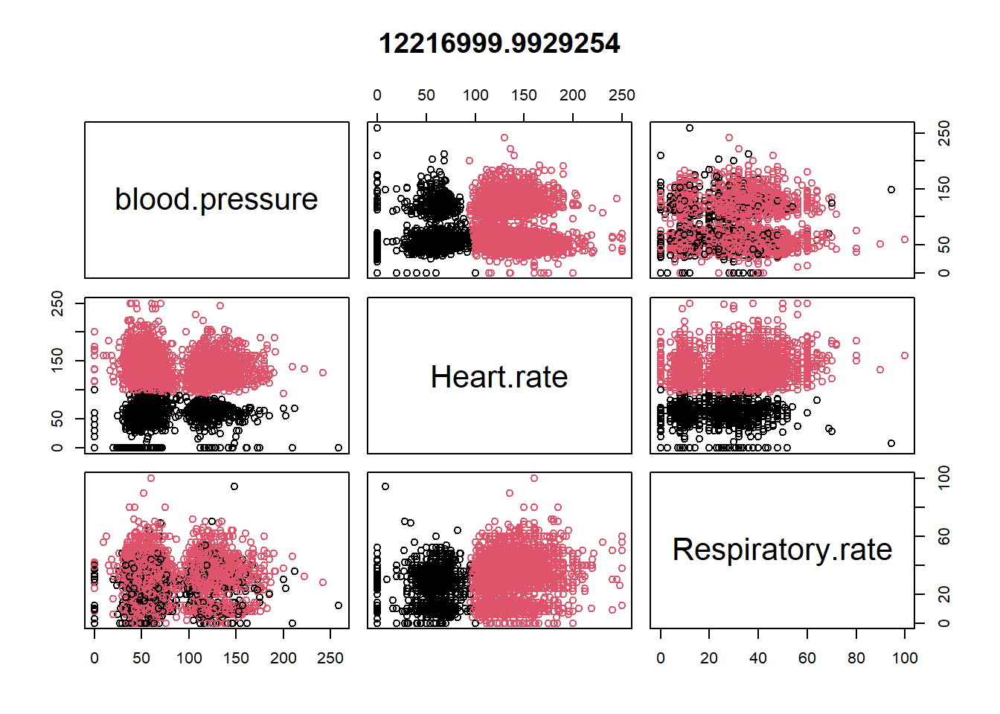

Unsupervised learning
In this chapter, we will talk about unsupervised learning.
In the initial code chunk, we load a specific library that will be utilized for publishing-related functionality throughout the chapter.
Clustering
Clustering is an unsupervised learning algorithm. These algorithms can classify data into multiple groups. Such classification is based on similarity.
Group characteristics include (to the extent that is possible)
- low inter-class similarity: observation from different clusters would be dissimilar
- high intra-class similarity: observation from the same cluster would be similar
Within-cluster variation will be thus minimized by optimizing within-cluster sum of squares of Euclidean distances (Wikipedia 2023a)
K-means
K-means is a very popular clustering algorithm, that partitions the data into \(k\) groups.
Algorithm:
- Determine a number \(k\) (e.g., could be 3)
- randomly select \(k\) subjects in a data. Use these points as staring points (centers or cluster mean) for each cluster.
- By Euclidean distance measure (from the initial centers), try to determine in which cluster the remaining points belong.
- compute new mean value for each cluster.
- based on this new mean, try to determine again in which cluster the data points belong.
- process continues until the data points do not change cluster membership.
Read previously saved data
We read a previously saved dataset from a specified file path.
In the next few code chunks, we implement k-means clustering on various subsets of the data, visualizing the results and displaying the cluster centers. The first example uses two variables, the second example uses three, and in the third example, a larger subset of variables is selected but not immediately utilized in the clustering. In the subsequent code chunk, we apply k-means clustering to the larger subset of variables, displaying various results and aggregating data by cluster to display mean and standard deviation values for each variable within each cluster.
Example 1

Example 2
datax0 <- ObsData[c("blood.pressure", "Heart.rate", "Respiratory.rate")]
kres0 <- kmeans(datax0, centers = 2, nstart = 10)
kres0$centers
#> blood.pressure Heart.rate Respiratory.rate
#> 1 80.10812 135.08956 29.85267
#> 2 73.71684 54.95789 22.76723
plot(datax0, col = kres0$cluster, main = kres0$tot.withinss)
Example with many variables
kres <- kmeans(datax, centers = 3)
#kres
head(kres$cluster)
#> [1] 3 3 1 2 3 3
kres$size
#> [1] 331 1406 3998
kres$centers
#> edu blood.pressure Heart.rate Respiratory.rate Temperature PH
#> 1 11.87912 74.13142 133.5257 28.06042 38.11417 7.389388
#> 2 11.45185 73.77809 54.7532 22.76693 37.04930 7.381912
#> 3 11.74154 80.55103 134.9102 29.96748 37.77743 7.390619
#> Weight Length.of.Stay
#> 1 70.73593 98.97885
#> 2 66.89213 17.34922
#> 3 67.91611 16.63032
aggregate(datax, by = list(cluster = kres$cluster), mean)Optimal number of clusters
Next, we explore determining the optimal number of clusters, visualizing the total within-cluster sum of squares for different values of k and indicating a chosen value of k with a vertical line on the plot.
require(factoextra)
fviz_nbclust(datax, kmeans, method = "wss")+
geom_vline(xintercept=3,linetype=3)
Here the vertical line is chosen based on elbow method (Wikipedia 2023b).
Discussion
- We need to supply a number, \(k\): but we can test different \(k\)s to identify optimal value
- Clustering can be influenced by outliners, so median based clustering is possible
- mere ordering can influence clustering, hence we should choose different initial means (e.g.,
nstartshould be greater than 1).
Video content (optional)
Tip
For those who prefer a video walkthrough, feel free to watch the video below, which offers a description of an earlier version of the above content.
References
Wikipedia. 2023a. “Cross-Validation (Statistics).†https://en.wikipedia.org/wiki/Cross-validation_(statistics).
———. 2023b. “Elbow Method (Clustering).†https://en.wikipedia.org/wiki/Elbow_method_(clustering).